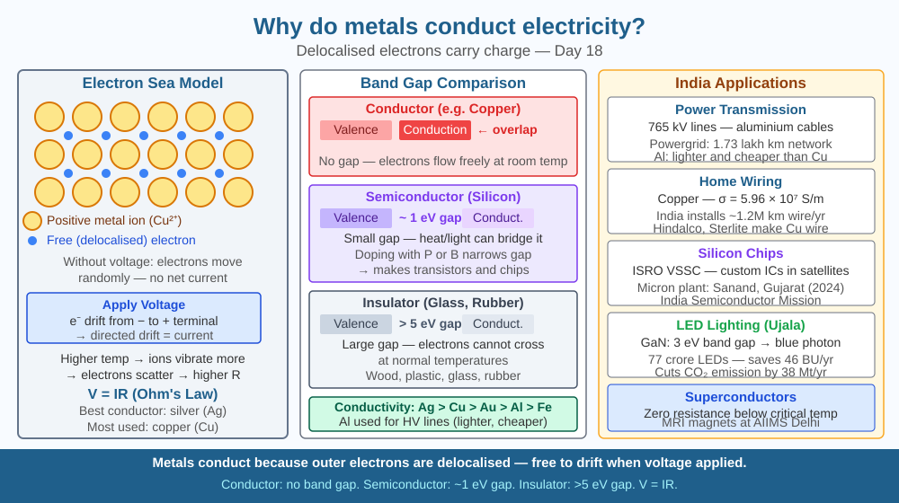

Discover why metals conduct electricity while most other materials do not — and understand the electron sea model that explains conductors, insulators, semiconductors, and superconductors.
Copper wire carries electricity across India's entire power grid — from Bhakra dam to a light bulb in a Delhi home. Plastic around the wire does not conduct at all. Silicon — in between — conducts sometimes. Gold plating on circuit board contacts ensures reliable connections. Carbon in graphite conducts electricity yet diamond (also pure carbon!) does not. Why does the same element sometimes conduct and sometimes not? And what is happening inside copper wire when current flows?
Atomic structure of metals:
Metal atoms have 1–3 electrons in their outermost shell (valence electrons). In a solid metal: - Atoms are arranged in a regular crystal lattice (rows and columns of atoms) - Valence electrons are not bound to any specific atom — they are "delocalised" and free to move throughout the entire lattice - This creates the electron sea model: a lattice of positive metal ions (atoms that have given up their outer electrons) surrounded by a "sea" of free electrons
How current flows:
When a voltage (potential difference) is applied across a metal conductor: - The free electrons experience an electric force - They drift toward the positive terminal (conventional current flows in the opposite direction) - This drift of electrons is electric current: I = Q/t (charge per unit time) - Electrons don't all rush simultaneously — they drift slowly (~mm/s) but the electric field propagates at nearly the speed of light
Resistance and temperature:
Insulators vs conductors vs semiconductors:
Superconductors:
Below a critical temperature (~−269°C for aluminium), resistance drops to exactly zero — electrons flow without any collisions. Used in MRI machines and some particle accelerators.
Think of a metal lattice as a busy train station (the lattice of positive ions) full of commuters (the free electrons) who move freely through the station. Normally they wander randomly — no net current. When a voltage is applied, it's like opening an exit at one end — all the commuters gradually drift toward it. The more commuters (free electrons), the more easily they flow (higher conductivity). Higher temperature is like adding noise and obstacles (vibrating atoms) that slow the commuters down — resistance increases. Insulators are like stations with all the exits locked — no commuter can leave.

The diagram shows three side-by-side panels: (1) CONDUCTOR (copper) — regular lattice of Cu⁺ ions (circles) with dots (free electrons) moving freely between them; voltage arrow on the left causes electron drift to the right. (2) INSULATOR (rubber) — atoms with tightly bound electrons, no free movement, large gap shown in energy band diagram. (3) SEMICONDUCTOR (silicon) — few free electrons at room T; more freed when doped with phosphorus (n-type) or boron (p-type). Below: a resistance vs temperature graph showing metals increasing, semiconductors decreasing with temperature.
Build a simple continuity tester: a 3 V battery, an LED, and two wires with exposed ends. Touch the wire ends together (short circuit the LED directly) — it lights. Now touch various objects: a coin (lights — metal conductor), a pencil lead (lights dimly — graphite conducts), plastic ruler (no light — insulator), paper (no light), aluminium foil (lights — conductor), eraser (no light — rubber insulator), water with salt dissolved (lights — ions conduct). Record your results in a table: material, conducts?, why?
Graphene — a single layer of carbon atoms arranged in a honeycomb lattice — has a conductivity 35× higher than copper at room temperature, yet is just one atom thick. Diamond (carbon in a different arrangement — tetrahedral) is an insulator. The same atoms, arranged differently, produce radically different electrical behaviour. This is because conductivity depends not on the elements but on the band structure — the quantum mechanical arrangement of energy levels that determines whether electrons can move freely. Understanding band structure is what allowed engineers to create the transistor in 1947 and sparked the entire semiconductor revolution. What does this imply about the relationship between atomic geometry and material properties?
What property of metals allows them to conduct electricity?
Why is knowing about free electrons more useful than just knowing metals conduct?
If a metal were heated to very high temperature, what would you predict about its resistance?
A copper wire (length = 10 m, cross-sectional area = 1 mm² = 10⁻⁶ m²) carries 5 A of current at 25°C. Resistivity of copper at 25°C: ρ₀ = 1.68 × 10⁻⁸ Ω·m, temperature coefficient: α = 0.00393 /°C. (a) Calculate the resistance of the wire at 25°C using R = ρL/A. (b) Calculate the voltage across the wire (V = IR). (c) Calculate the power dissipated as heat (P = I²R). (d) What is the resistance at 100°C? Use ρ = ρ₀(1 + α(T-25)). (e) By how much does power dissipation increase at 100°C?
At −196°C (liquid nitrogen temperature), some materials become superconductors with zero electrical resistance. In a superconducting loop, current can flow indefinitely without any battery — no energy source needed. Once started, the current circulates forever (in theory). MRI machines in Indian hospitals (Apollo, AIIMS) use superconducting coils cooled with liquid helium (−269°C) to generate the powerful magnetic fields needed for imaging. The entire field that MRI depends on is maintained without any energy input to the coil — because resistance is exactly zero. In 2023, researchers announced a room-temperature superconductor claim (later retracted). If room-temperature superconductivity were achieved, electrical resistance in power grids would disappear — India would lose zero electricity in transmission losses (currently ~20% of all power generated).
Metals conduct because valence electrons are free (delocalised) in the lattice — the 'electron sea.' Voltage → electrons drift → current. Higher temperature → more atomic vibration → higher resistance. Insulators have no free electrons; semiconductors have controllable conductivity.